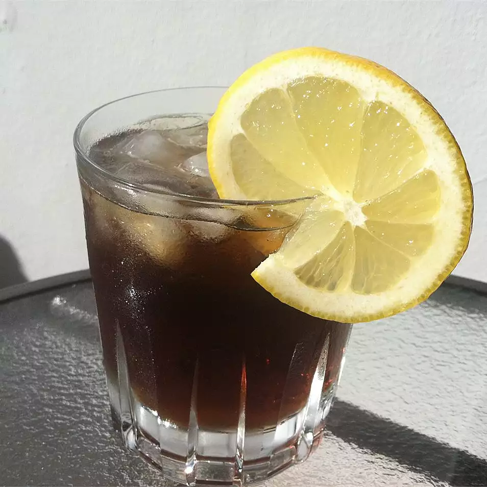

Tennessee Tea

Description
One of my favorites! Similar to a Long Island, but with Jack Daniel's!
Ingredients
- 2 fluid ounces whiskey (such as Jack Daniel's®), or to taste
- 1 fluid ounce triple sec
- 1 fluid ounce sweet and sour mix
- 1 fluid ounce cola, or to taste
Steps
- Pour the whiskey, triple sec, sweet and sour mix, and cola into a cocktail shaker over ice.
- Cover, and shake until the outside of the shaker has frosted.
- Strain into a chilled glass over ice to serve.